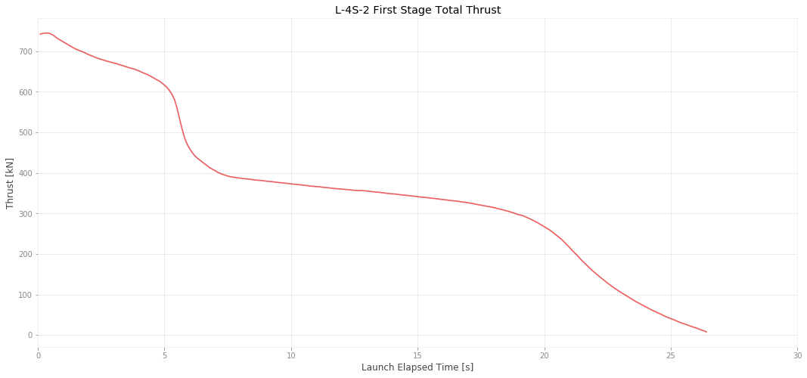
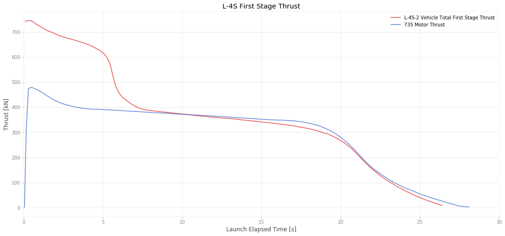
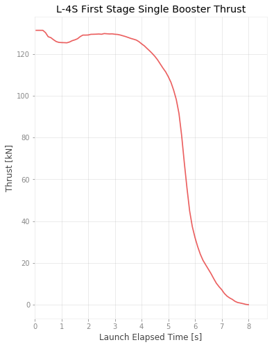
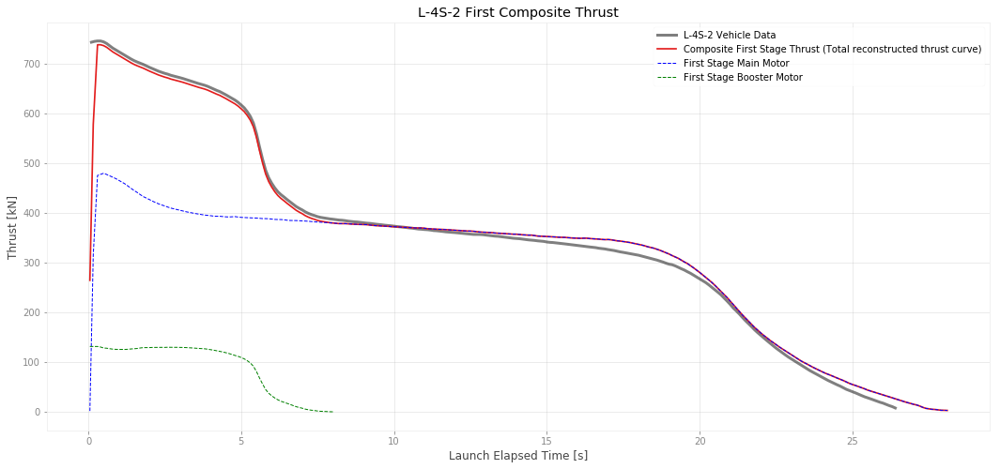

First Stage Thrust Curves
The reference I can find with thrust curves for the Lambda vehicle has a total thrust curve for the entire first stage, the main motor and both boosters combined. We would like to know what the indavidual thrusts are.
We can probably make a pretty good guess using the thrust of the first stage motor by itself and then subtracting from the total.
First Stage Total Thrust

We can see the booster thrust die down after about 7 seconds.
An earlier reference shows a thrust curve from the first stage motor by itself:

And then subtract that curve to get just the booster thrust by itself. There are two boosters, so dividing by two will give the thrust of just one by itself.

Reconstructed Thrust Curve
If we put it all back together, it should exactly match our original thrustcurve

We can now use the booster data to create useful thrust curves for simulation.
Format:
| Column | Value | Units |
|---|---|---|
| 1 | Time | s |
| 2 | Thrust | N |